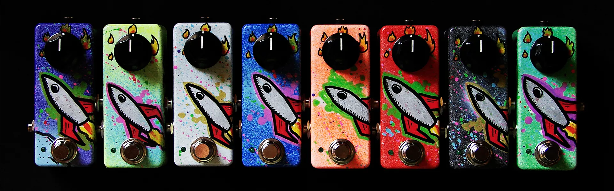

Un pedal de guitarra (o pedal de efectos) es un dispositivo electrónico utilizado para alterar el sonido de una fuente, en este caso de nuestra guitarra. Así de simple. El problema viene cuando descubres la cantidad de pedales que hay, y te abrumas con la función que cada uno de ellos desempeña. Vamos a imaginarnos que estás comenzando a aprender a tocar la guitarra eléctrica. Todos hemos sido principiantes. ¿Es realmente necesario hacerte con un pedal? La respuesta es sí y no. Depende de la necesidad que tengas de querer generar sonidos digamos… algo alternativos. Lo más común es usarla para conciertos en directo y grabaciones. Si tienes tu grupito o tocas en casa, al principio, no es necesario. Eso sí... ¡los pedales enganchan! Si te compras uno prepara el bolsillo que las ganas de comprarte nuevos vendrán a continuación.
Los pedales de efectos para guitarra te abren un mundo lleno de nuevos sonidos para tu instrumento, con los que podrás pasar un buen rato y emular los sonidos de tus artistas favoritos. El origen de los pedales de efectos para guitarra o, más bien, la intención de modificar o alterar el tono de la guitarra, puede remontarse hasta los años 40 del siglo pasado, cuando el guitarrista Les Paul experimentaba con el eco y las grabaciones multipistas. Durante los años 50 y 60 ya aparecieron los primeros pedales para guitarra, pero solían ser bastante caros. Paralelamente, marcas como como Fender o Gibson comenzaron a incorporar efectos de reverb y trémolo en sus amplificadores. Hoy en día, los efectos para guitarra los puedes encontrar en formatos muy diversos: pedales analógicos ("stomp box"), pedaleras multiefectos, racks, amplificadores e, incluso, mediante software en tu ordenador o teléfono móvil, como por ejemplo usando Amplitube.